東京大学 2006年 理科 第5問 (未)
問題
解答
(1)
 についての漸化式を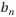について書き換えると、
についての漸化式を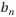について書き換えると、
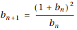
n=2とき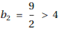だから、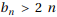は成立する。
n = k (k >= 2)のときに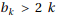が成立すると仮定する。
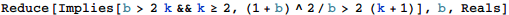

だから n=k+1 のときも成立する。
以上より、数学的帰納法によりすべての整数n(n>1)に対してが成立することが示された。
(2)
(1)の結果より、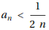。
また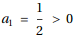であり、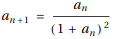なので、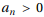だから、
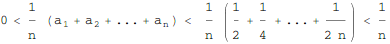
したがって、はさみうちの原理により、求める極限は0である。
(3)